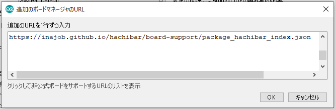
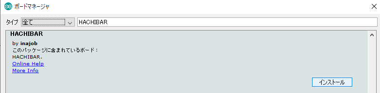

<HACHIBARに戻る
このページではHACHIBARでの開発方法を紹介します。
## ボードマネージャへの登録
Arduino IDEでHACHIBARの開発を行うためにはボードマネージャに登録する必要があります。
Arduino IDE を起動し、メニューの「ファイル」「環境設定」の「追加のボードマネージャのURL」に `https://inajob.github.io/hachibar/board-support/package_hachibar_index.json` を追加してください。

その後、メニューの「ツール」「ボード」「ボードマネージャ...」から「HACHIBAR」を「インストール」してください。

## ボードの選択
上記が完了したら、「ツール」「ボード」から「HACHIBAR」が現れるので選択してください。
HACHIBARをPCに接続し認識できると「ツール」「シリアルポート」に「COM6」（この6という数字は環境によって変わります）などのシリアルポートが現れるので、それを選択してください。
## HACHIBAR SDK の登録
HACHIBAR SDK( https://github.com/inajob/hachibar-lib/releases/download/v0.1.0/hachibar.zip ) をダウンロードします。
Arduino IDE を起動し、メニューの「スケッチ」「ライブラリのインクルード」「.ZIP形式のライブラリをインストール...」を選択し、先ほどダウンロードした hachibar.zip を選択します。
## サンプルプログラムの実行
上記が完了したラ「ファイル」「スケッチ例」から「HACHIBAR」を選べるようになります。
好きなサンプルプログラムを選んで、ツールバーの右矢印のボタン「マイコンボードに書き込む」をクリックすることでプログラムをビルド+書き込みできます。
## (補足)HACHIBAR SDK のアップデート
すでにHACHIBAR SDKをインストールしたことがある場合は、新しいバージョンのHACHIBAR SDKをインストールすることができません。
再インストールのためには、一度HACHIBAR SDKを削除する必要があります。
Arduino IDEを起動し「ファイル」「環境設定」を選択し、「スケッチブックの保存場所」をのパスを確認してください。
その保存場所に存在する「hachibar」というディレクトリを削除してください。
---
<HACHIBARに戻る